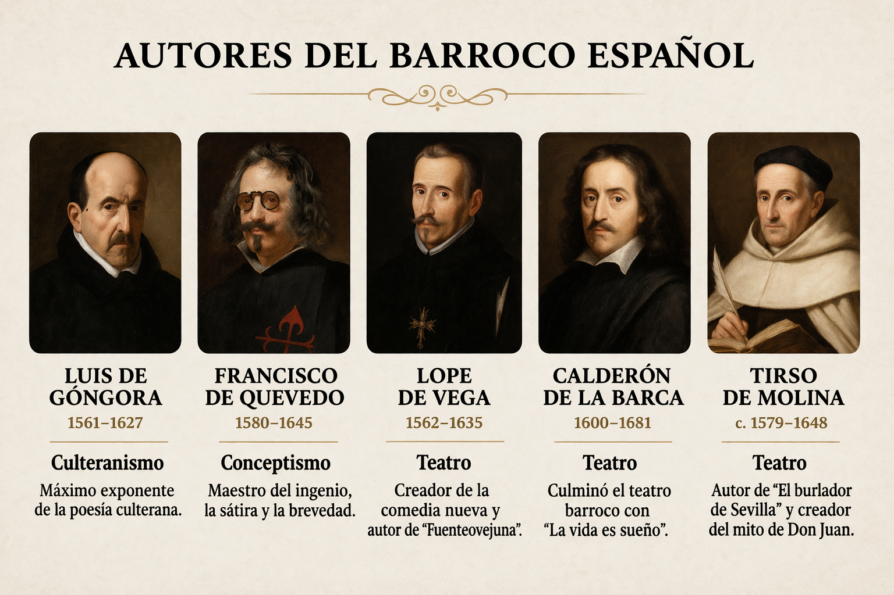

PROYECTO: Los autores del barroco español
Objetivo: Investigar y comprender los principales autores del Barroco español, sus obras y su contexto histórico y literario.
Nivel al que va dirigido: 3º ESO
Temporalización aproximada: 9-10 sesiones
Materia: Lengua castellana y Literatura
Idioma: castellano
Descripción general de lo que se pretende que el alumnado aprenda o trabaje:
Este proyecto contribuye especialmente al desarrollo de las competencias específicas 2, 3, 5, 6 y 8, al centrarse en la comprensión, producción y análisis de textos literarios, así como en la investigación autónoma.
Criterios de evaluación implicados:
· 2.2. Valorar la forma y el contenido de textos orales y multimodales de cierta complejidad, evaluando su calidad, su fiabilidad y la idoneidad del canal utilizado, así como la eficacia de los procedimientos comunicativos empleados.
· 3.1. Realizar exposiciones y argumentaciones orales de cierta extensión y complejidad con diferente grado de planificación sobre temas de interés personal, social, educativo y profesional ajustándose a las convenciones propias de los diversos géneros discursivos, con fluidez, coherencia, cohesión y el registro adecuado en diferentes soportes, utilizando de manera eficaz recursos verbales y no verbales.
· 3.2. Participar de manera activa y adecuada en interacciones orales informales, en el trabajo en equipo y en situaciones orales formales de carácter dialogado, con actitudes de escucha activa y estrategias de cooperación conversacional y cortesía lingüística.
· 5.2. Incorporar procedimientos para enriquecer los textos atendiendo a aspectos discursivos, lingüísticos y de estilo, con precisión léxica y corrección ortográfica y gramatical.
· 6.1. Localizar, seleccionar y contrastar de manera progresivamente autónoma información procedente de diferentes fuentes, calibrando su fiabilidad y pertinencia en función de los objetivos de lectura; organizarla e integrarla en esquemas propios, y reelaborarla y comunicarla de manera creativa adoptando un punto de vista crítico respetando los principios de propiedad intelectual.
· 6.2. Elaborar trabajos de investigación de manera progresivamente autónoma en diferentes soportes sobre diversos temas de interés académico, personal o social a partir de la información seleccionada.
· 6.3. Adoptar hábitos de uso crítico, seguro, sostenible y saludable de las tecnologías digitales en relación a la búsqueda y la comunicación de la información.
· 8.1. Explicar y argumentar la interpretación de las obras leídas a partir del análisis de las relaciones internas de sus elementos constitutivos con el sentido de la obra y de las relaciones externas del texto con su contexto sociohistórico, atendiendo a la configuración y evolución de los géneros y subgéneros literarios.
El proyecto tiene como objetivo que el alumnado conozca y comprenda las características fundamentales del Barroco español a través del estudio de sus principales autores y obras. Se pretende que desarrollen la capacidad de investigar, seleccionar y organizar información relevante, así como relacionar la producción literaria con su contexto histórico, social y cultural.
Además, el alumnado trabajará el análisis de textos y estilos literarios, identificando rasgos propios del Barroco como el desengaño, la complejidad expresiva o la crítica social. También se fomenta el desarrollo de la competencia comunicativa mediante la elaboración de una presentación estructurada y la expresión de opiniones personales fundamentadas.
Por último, el proyecto busca promover el pensamiento crítico, la autonomía en el aprendizaje y el trabajo cooperativo, favoreciendo una comprensión más profunda y significativa de la literatura como reflejo de una época.